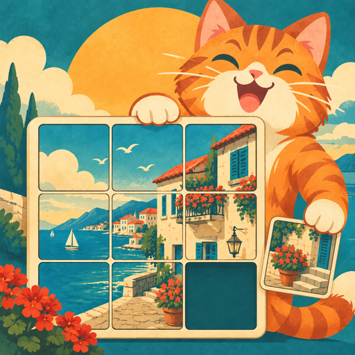
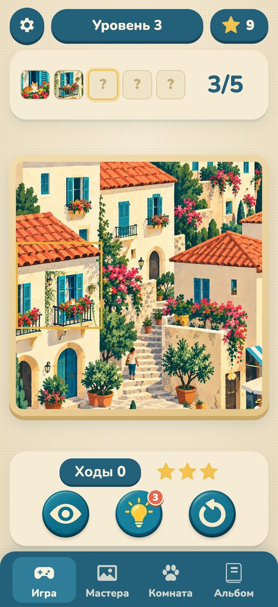

Кусочек к кусочкуPiece by Piece · пятнашки с картинками для iPhone
Об игре
Двигай плитки и собирай картинку. Собранная картинка уменьшается и становится кусочком следующей — так шаг за шагом открывается целый городок, лес или вокзал. А ещё — картины великих художников по частям и комната рыжего котика, которую можно обставить.
Slide the tiles to complete the picture. Each finished picture shrinks and becomes a piece of the next one. Plus great paintings piece by piece and a cozy room for the ginger kitty.
Поддержка · Support
Нашли ошибку или есть идея? Напишите нам — ответим.
Found a bug or have an idea? Write to us.
Прогресс хранится на устройстве: если удалить игру, он сбросится. Progress is stored on your device and is removed if you delete the game.
Картины мастеров · Masterpieces
Все картины — общественное достояние. Фотографии взяты из открытых коллекций музеев. All paintings are in the public domain; photos come from open museum collections.
- Иван Айвазовский — «Девятый вал», 1850 (Ivan Aivazovsky, The Ninth Wave)
Wikimedia Commons (Public domain) - Иван Шишкин и Константин Савицкий — «Утро в сосновом лесу», 1889 (Ivan Shishkin and Konstantin Savitsky, Morning in a Pine Forest)
Wikimedia Commons (Public domain) - Исаак Левитан — «Золотая осень», 1895 (Isaac Levitan, Golden Autumn)
Wikimedia Commons (Public domain) - Виктор Васнецов — «Богатыри», 1898 (Viktor Vasnetsov, Bogatyrs)
Wikimedia Commons (Public domain) - Винсент Ван Гог — «Спальня в Арле», 1889 (Vincent van Gogh, The Bedroom)
Art Institute of Chicago (CC0) - Винсент Ван Гог — «Пшеничное поле с кипарисами», 1889 (Vincent van Gogh, Wheat Field with Cypresses)
The Met Open Access (CC0) - Клод Моне — «Пруд с кувшинками», 1900 (Claude Monet, Water Lily Pond)
Art Institute of Chicago (CC0) - Кацусика Хокусай — «Большая волна в Канагаве», около 1831 (Katsushika Hokusai, The Great Wave off Kanagawa)
Art Institute of Chicago (CC0) - Жорж Сёра — «Воскресный день на острове Гранд-Жатт», 1884–1886 (Georges Seurat, A Sunday on La Grande Jatte)
Art Institute of Chicago (CC0) - Ян Вермеер — «Молодая женщина с кувшином», около 1662 (Johannes Vermeer, Young Woman with a Water Pitcher)
The Met Open Access (CC0)
Документы · Legal
